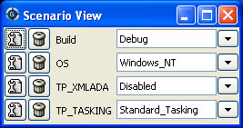

2. Description of the Main Windows
2.1. The Welcome Dialog

When starting GPS, a welcome dialog is displayed by default, giving the
following choices:
- Create new project from template
- If you select this option and then click the OK button, GPS will
launch an assistant to create a project using one of the predefined project
templates.
- Start with default project in directory
If you select this option and click on the OK button, GPS will
first look for a project called default.gpr in the current directory
and load it if found. Otherwise, it will copy in
the current directory the default project found under
<prefix>/share/gps/default.gpr and load it.
GPS will remove this copy when exiting or loading another project, if the
copy has not been modified during the session.
If the current directory is not writable, GPS will instead load directly
<prefix>/share/gps/readonly.gpr. In this case, GPS will work in a
degraded mode, where some capabilities will not work (such as building and
source navigation).
- Create new project with wizard
Selecting this option and clicking on the OK button will start a
wizard allowing you to specify most of the properties for a new project. Once
the project is created, GPS will save it and load it automatically.
See The Project Wizard for more details on the project wizard.
Several kinds of wizard are available. Depending on the kind of project,
you will get asked different type of information. In the end, GPS will create
one or more project files, and automatically load them.
One of the wizard, “From existing Ada sources”, will try and import a set of
sources and object files, and attempt to create one or more project files so
that building your application through these project files will put the
objects in the same directory they are currently in. If you have not compiled
your application when launching this wizard, GPS will create a single project
file and all object files will be put in the same object directory. This is
the prefered method when importing sources with duplicate file names, since
the latter is only authorized in a single project file, not across various
project files.
- Open existing project
You can select an existing project by clicking on the Browse button,
or by using a previously loaded project listed in the combo box. When a
project is selected, clicking on the OK button will load this
project and open the main window.
- Always show this dialog when GPS starts
If unset, the welcome dialog won’t be shown in future sessions.
In this case, GPS will behave as follows: it will first look for a
-P switch on the command line, and load the corresponding project if
present.
Then, it will look for a project file in the current directory and will
load the first project file found.
If no project file can be found in the current directory, GPS will start
with the default project.
To reset this property, go to the menu Edit->Preferences.
.. index:: preferences
The Preferences Dialog.
- Quit
- If you click on this button, GPS will terminate immediately.
When you specify a -P switch on the command line, or if there is only one
project file in the current directory, GPS will start immediately with
the project file specified, instead of displaying the welcome dialog.
In addition, if you specify source files on the command line, GPS will also
start immediately, using the default project if no project is specified.
By default, files specified on the command line are taken as is and can
be absolute or relative pathnames. In addition, if you prepend a filename
with the = character, then GPS will look for the file in the source
search path of the project.
2.2. The Tip of the Day
This dialog displays short tips on how to make the most efficient use of
GPS. You can click on the Previous and Next buttons to access
all tips, and close the dialog by either clicking on the Close button
or pressing the ESC key.
You can also disable this dialog by unchecking the Display Tip of the Day on startup check box. If you would like to reenable this dialog, you
can go to the Edit->Preferences dialog.
The Preferences Dialog.

2.6. The Project View
The project view provides a representation of the various components of your
project hierarchy, as listed below.
It is displayed by default on the left side of the main window, and can
be selected by using the Project->Project View or
Tools->Views->Project menu items.
Under Windows, it is possible to drop files (coming e.g. from the Explorer)
in the project view with the following behavior: a project file dropped
will be loaded; any other file will be opened in a new source editor.
The project view, as well as the file and outline view provide an
interactive search capability allowing you to quickly
search in the information currently displayed. The default key
to start an interactive search is control-f.
This will open a small window
at the bottom of the view where you can interactively type names.
The first matching name in the tree will be selected while you type it.
You can then also use the up and down keys to navigate through
all the items matching the current text.
The various components that are displayed are:
- projects
All the sources you are working with are put under
control of projects. These projects are a way to store the switches to
use for the various tools, as well as a number of other properties.
They can be organized into a project hierarchy, where a root project
can import other projects, with their own set of sources.
Initially, a default project is created, that includes all the sources
in the current directory.
The Project View displays this project hierarchy: the top node
is the root project of your application (generally, this is where the
source file that contains the main subprogram will be located). Then a node
is displayed for each imported project, and recursively for their own imported
projects.
A given project might appear multiple times in the
Project View, if it is imported by several other projects.
There exists a second display for this project view, which lists all projects
with no hierarchy: all projects appear only once in the view, at the top
level. This display might be useful for deep project hierarchies, to make it
easier to find projects in the project view.
This display is activated through the contextual menu entry
Show flat view, which acts as a switch between the two displays.
A special icon with a pen mark is displayed if the project
was modified, but not saved yet. You can choose to save it at any time
by right-clicking on it. GPS will remind you to save it before any
compilation, or save it automatically, if the corresponding preference
is saved.
directories
The files inside a project can be organized into several physical
directories on the disk. These directories are displayed under each
project node in the Project View
You can chose whether you want to see the absolute path names for the
directories or paths relative to the location of the project. This is done
through the Show absolute paths contextual menu.
Special nodes are created for object and executables directories. No
files are shown for these.
The contextual menu entry Show hidden directories can be used to filter
the directories considered as hidden. This can be used to not display the
version control directories like CVS or .svn for example.
files
The source files themselves are stored in the directories, and
displayed under the corresponding nodes. Note that
only the source files that actually belong to the
project (i.e. are written in a language supported by that project and
follow its naming scheme) are actually visible.
For more information on supported languages, Supported Languages.
A given file might appear multiple times in the Project View,
if the project it belongs to is imported by several other projects.
If you left click on a file and keep the button pressed, you can drop it
anywhere in GPS to open an editor at that location.
entities
If you open the node for a source file, the file is parsed by one of the
fast parsers integrated in GPS so that all entities declared in
the project can be shown. These entities are grouped into various
categories, which depend on the language. Typical categories include
subprograms, packages, types, variables, tasks, ...
Double-clicking on a file, or simple clicking on any entity will open
a source editor and display respectively the first line in this file
or the line on which the entity is defined.
You can also drag a file anywhere into GPS. This will open a new editor
if the file is not already edited, or move the existing editor otherwise.
If you press shift at the same time, and the file is already edited,
a new view of the existing editor is created instead.
If you open the search dialog through the Navigate->Find or Replace...
menu, you have the possibility to search for anything in the project view,
either a file or an entity. Note that searching for an entity can be slow
if you have lots of files, and/or big files.
A contextual menu, named Locate in Project View, is also provided when
inside a source editor. This will automatically search for the first entry for
this file in the project view. This contextual menu is also available in other
modules, e.g. when selecting a file in the Dependency Browser.
2.6.1. The configuration variables
As described in the GNAT User’s Guide, the project files can be
configured through external variables (typically environment
variables). This means that e.g. the exact list of source files, or the
exact switches to use to compile the application can be changed when
the value of these external variables is changed.
GPS provides a simple access to these variables, through a window
called the Scenario View. These variables are called
Configuration Variables, since they provide various scenarios for
the same set of project files.

A combo box is displayed in this area for each environment
variable the project depends on. The current value of the variable can
be set simply by selecting it from the pop-down window that appears
when you click on the arrow on the right of the variable name
New variables can be added through the contextual menu
Project->Add Configuration Variable in the Project View.
The list of possible values for a variable can be changed by clicking on the
button on the left of the variable’s name.
Whenever you change the value of one of the variables, the project is
automatically recomputed, and the list of source files or directories
is changed dynamically to reflect the new status of the
project. Starting a new compilation at that point will use the new
switches, and all the aspects of GPS are immediately affected
according to the new setup.
2.6.2. Icons for source language entities
Entities in the source code are presented with representative icons within the
various GPS views (the Outline, Project, and Entity views, for example).
These icons indicate both the language categories of the entities, such as
packages and methods, as well as compile-time visibility. In addition, the
icons distinguish entity declarations from other entities. The same icons are
used for all programming languages supported by the viewers, with
language-specific interpretations for both compile-time visibility and
recognizing declarations.
There are five language categories used for all supported languages: package,
subprogram, type, variable, and generic. The icons corresponding to
these language categories are as follows.
The package category’s icon is a square.

The subprogram category’s icon is a circle.

The type category’s icon is a triangle.

The variable category’s icon is a dot.

The generic category’s icon is a diamond.

These basic icons are enhanced with decorators, when appropriate, to indicate
compile-time visibility constraints and to distinguish declarations from
completions. For example, the icons for entity declarations have a small ‘S’
decorator added, denoting a ‘spec’.
With respect to compile-time visibility, icons for ‘protected’ and ‘private’
entities appear within an enclosing box indicating a visibility constraint. For
entities with ‘protected’ visibility, this enclosing box is colored in gray.
‘Private’ entities are enclosed within a red box. The icons for ‘public’
entities have no such enclosing box. For example, a variable with ‘private’
visibility would be represented by an icon consisting of a dot enclosed within
a red box.
These additional decorators are combined when appropriate. For example, the
icon corresponding to the ‘private’ declaration of a ‘package’ entity would be
a square, as for any package entity, with a small ‘S’ added, all enclosed
within a red box.
Language constructs are mapped to the categories in a language-specific manner.
For example, C++ namespaces and Ada packages correspond to the package
category. C functions and Ada subprograms correspond to the method category,
and so on. The generic category is a general category representing other
language entities, but note that not all possible language constructs are
mapped to categories and icons. (Note also that the generic category does
not correspond to Ada generic units or C++ templates.)
The names of the categories should not be interpreted literally in terms of
language constructs because the categories are rather general, in order to
limit the number used. The variable category includes both constants and
variables in Ada, for example. Limiting the number of categories maintains a
balance between presentation complexity and the need to support distinct
programming languages.
Icons for a given entity may appear more than once within a view. For example,
an Ada private type will have both a partial view in the visible part of the
enclosing package as well as a full view in the private part of the package.
Two triangle icons will therefore appear for the two occurrences of the type
name, one with the additional decorator indicating the ‘private’ compile-time
visibility.
2.7. The File View
In addition to the Project View, GPS also provides a
File View through the Tools->Views->Files menu.

In this view, directories are displayed exactly as they are organized
physically on the disk (including Windows drives).
By default, the File View will display all the files that exist on the disk.
Filters can be set through the contextual menu to only show the files and
directories that belong to the project hierarchy by using the contextual menu
Show files from project only.
Each source file can also be explored as described in The Project View.
Drag and drop of files is also possible from the files view, to conveniently
open a file.
The contextual menu also allow you to create, rename and delete files and
directories. Some of those operations are also available from the Project View.
2.8. The Entity View
GPS provides an Entity View which allows you to browse and quickly find all
Ada entities referenced in the currently loaded project hierarchy. This view
can be accessed through the Tools->Views->Entities menu.
This view is divided in three parts: a Pattern entry, a tree view, and a
documentation view.
To query an entity, enter a search pattern in the Pattern entry. The tree
view then shows a list of all known entities which start with this pattern.
When an entry is selected in the tree, the documentation view displays the
documentation corresponding to the selected entity.
When the File View has the focus, using the up/down arrow keys changes the
selection in the tree, and pressing the Enter key opens an editor to the
declaration of the selected entity. It is also possible to jump to this
location by double-clicking on the line in the tree, or by clicking on the
hyperlink in the documentation view.
Note that the view shows the entities that are currently loaded in memory, see
Support for Cross-References.
2.9. The Window View
The Window View displays the currently opened windows. It is opened through
the Tools->Views->Windows menu.
It can display the opened windows in one of two ways:
- Sorted alphabetically
- Organized by notebooks, as in the GPS window itself. This latter view
is mostly useful if you have lots of windows open
The mode is selected through the contextual menu.
You can also choose, through this contextual menu, whether only the source
editors should be visible, or whether all windows should be displayed.
This window allows you to quickly select and focus on a particular window, by
clicking on the corresponding line with the left mouse button. If you click and
leave the mouse button pressed, this starts a drag and drop operation so that
you can also move the window to some other place in the desktop (see the
description of the MDI earlier in this document).
Multiple windows can be selected by clicking with the mouse while pressing the
control or shift keys. The Window view provides a contextual menu to easily
close all selected windows at once, which is a very fast way to cleanup your
desktop after you have finished working on a task.
2.10. The Outline View
The Outline View, which you can choose to activate through the
Tools->Views->Outline menu, shows the contents of the current file.
The exact meaning of this depends on the language you are seeing. For Ada, C
and C++ files, this is the list of entities that are declared at the global
level in your current file (Ada packages, C++ classes, subprograms, Ada types,
...).
Clicking on any entity in this view will automatically jump to the right line
in the file, including if your file has been slightly modified since the
outline view was last refreshed.
To refresh the contents of the view, select the Refresh entry in the
contextual menu (right-click anywhere in the outline view). The Outline View
is updated automatically after editing, saving the file, or switching to a
different editor.
There are several preferences associated with the
outline view.
2.11. The Clipboard View
GPS has an advanced mechanism for handling copy/paste operations.
When you select the menus Edit->Copy or Edit->Cut, GPS adds the current
selection to the clipboard. As opposed to what lots of applications do, it
doesn’t discard the previous contents of the clipboard, but save it for future
usage. It saves a number of entries this way, up to 10 by default. This value
is configurable through the Clipboard Size preference.
When you select the menu Edit->Paste, GPS will paste the last entry made in
the clipboard at the current location in the editor.
If you immediately select Edit->Paste Previous, this newly inserted text will
be removed, and GPS will instead insert the second to last entry added to the
clipboard. You can keep selecting the same menu to get access to older entries.
This is a very powerful mechanism, since it means you can copy several distinct
lines from a place in an editor, move to an other editor and paste all these
separate lines, without having to go back and forth between the two editors.
The Clipboard View provides a graphical mean of seeing what is currently
stored in the clipboard. It appears as a list of lines, each of which is
associated with one level of the clipboard. The text that shows in these lines
is the first line of the selection at that level that contains non blank
characters. Leading characters are discarded. [...] is prepended or appended
in case the selection has been truncated.
If you bring the mouse over a line in the Clipboard View, a tooltip will pop
up showing the entire selection corresponding to the line by opposition to the
possibly truncated one.
In addition, one of the lines has an arrow on its left. This indicates the line
that will be pasted when you select the menu Edit->Paste. If you select
instead the menu Edit->Paste Previous, then the line below that one will be
inserted instead.
If you double-click on any of these lines, GPS will insert the corresponding
text in the current editor, and make the line you clicked on the current line,
so that selecting Edit->Paste or the equivalent shortcut will now insert that
line.
The contextual menu in the clipboard view provides one entry, which is Append
To Previous. If you select this entry, the select line will be append to the
one below, and removed from the clipboard. This means that selection
Edit->Paste will in fact paste the two entries at the same time. This is in
particular useful when you want to copy lines from separate places in the
initial file, merge them, and then paste them together one or more times later
on, through a single operation.
The Clipboard View content is preserved between GPS sessions. As an exception,
huge entries are removed and replaced with an entry saying “[Big entry has been
removed]”.
2.12. The Callgraph View
The callgraph view plays a role similar the callgraph browser. They display the
same information about entities, but in two different ways: the callgraph view
displays the information in a tree, easily navigable and perhaps easier to
manipulate when lots of entities are involved; the callgraph browser displays
the information as graphical boxes that can be manipulated on the screen, and
is best suited to generate a diagram that can be later exported to your own
documents.
This callgraph view is used to display the information about what subprograms
are called by a given entity, and, opposite, what entities are calling a given
entity.
Some references might be reported with an additional ” (dispatching)” text. In
such a case, this indicates that the call to the entity is not explicit in the
sources, but could occur through dynamic dispatching. This of course depends on
what arguments are passed to the caller at run time, and it is possible that
the subprogram is in fact never dispatched to.
This view is automatically displayed when you select one of the contextual
menus ... calls and ... is called by. Every time you select one of these
menus, a new view is opened to display that entity.
Whenever you expand a node from the tree by clicking on the small expander
arrow on the left of the line, further callgraph information is computed for
the selected entity, which makes it very easy to get information for a full
callgraph tree.
Closing and expanding a node again will recompute the callgraph for the entity.
On the right side of the main tree, a list displays the locations of calls for
the selected entity. Clicking on entries in this list opens editors showing the
corresponding location.
The Callgraph View supports keyboard navigation: Up and Down keys navigate
between listed locations, Left collapses the current level, Right expands
the current level, and Return jumps to the currently selected location.
The callgraph view is automatically saved in the desktop, and restored the next
time you restart GPS. However, the information displayed in these might no
longer be accurate at this stage, since it shows the status of the callgraph
during the last GPS session.
Left-clicking on a line in the Call Tree brings up a contextual menu with the
following entries:
- Collapse all
- Collapse all the entities in the Callgraph View.
- Remove entity
- Remove the selected entity from the Callgraph View.
- Clear Call Trees
- Remove all entries from the Callgraph View.
2.13. Bookmarks
Bookmarks are a convenient way to remember places in your code or in your
environment so that you can go back to them at any point in the future. These
bookmarks are saved automatically whenever they are modified, and restored when
GPS is reloaded, so that they exist across GPS sessions.
Bookmarks will automatically remember the exact location in an editor, not in
terms of line/column, but in terms of which word they point to. If you modify
the file through GPS, the bookmark will be automatically updated to keep
refering to the same place. Likewise if you close and reopen the file.
However, when the file is modified outside of GPS, the bookmark will not be
aware of that change, and will thus reference another place in the file.
The menu Edit->Create Bookmark allows you to create a bookmark at the current
location (either in the editor, or the browser for instance).
All the bookmarks you have created will be visible in the
Tools->Views->Bookmarks window. Clicking on the small icon to the left side
of each line will immediately jump to that bookmark.
You can rename a bookmark so that it is easier to remember what it refers to.
To do so, open the Bookmarks window, and click twice on the line of the
bookmark. This will change the way the name is displayed, so that you can edit
it in place. Press enter when you are done modifying the name.
You can delete an existing bookmark by right clicking on the line, and select
Delete bookmark in the contextual menu.
2.14. The Messages Window
The Messages window is used by GPS to display information and feedback about
operations, such as build output, information about processes launched, error
messages.

This is a read-only window, which means that only output is available, no input
is possible.
For an input/output window, see The Execution Window and also
The Shell and Python Windows.
2.15. The Shell and Python Windows
These windows give access to the various scripting languages supported by GPS,
and allow you to type commands such as editing a file or compiling without
using the menu items or the mouse.
An OS shell window is now also available in GPS, providing a simple access to
the underlying OS shell as defined by the SHELL or COMSPEC environment
variables.
To show the shell consoles, select the menu Tools->Consoles.
See Scripting GPS for more information on using scripting languages
within GPS.

You can use the up and down keys to navigate through the history
of commands.
2.16. The Locations View
The Location Tree is filled whenever GPS needs to display a list of locations
in the source files (typically, when performing a global search, compilation
results, and so on).

The Locations View shows a hierarchy of categories, which contain files, which
contain locations. Clicking on a location item will bring up a file editor at
the requested place. Right-clicking on file or category items brings up a
contextual menu allowing you to remove the corresponding node from the view.
Placing the mouse over an item automatically pop up a tooltip window with full
text of the item if this text can’t be completely shown in the window.
Every time a new category is created, as a result of a compilation or a search
operation for example, the first entry of that category is automatically
selected, and the corresponding editor opened. This behavior can be controlled
through a preference Jump To First Location.
Closing the Locations view will remove from the editors locations that are also
visible in the Locations view. If the Locations View is present when exiting
GPS and the desktop is saved, the locations will be saved as part of the
desktop for the current project, and will be loaded the next time GPS is
started on the same project.
To navigate through the next and previous location (also called Tag), you can
use the menu items Navigate->Previous Tag and Navigate->Next Tag, or the
corresponding key bindings.
Left-clicking on a line in the Location Tree brings up a contextual menu with
the following entries:
- Filter panel
- Controls availability of the filter panel at the bottom of the window.
- Sort by subcategory
- Toggle the sorting of the entries by sub-categories. This is useful,
for example, for separating the warnings from the errors in the build
results.
- Expand category
- Expand all the files in the current categories.
- Collapse all
- Collapse all the categories in the Locations View
- Remove category/file/message
- Remove the selected category, file or message from the Locations View.
Selected message can be removed using Locations view->Remove message
key binding also.
- Export messages into text file
- Export all messages of the selected category/file into text file.
- Jump to location
- Open the location contained in the message, if any.
- Clear Locations View
- Remove all entries from the Locations View.
In some cases, a wrench icon will be associated on the left of a compilation
message. See Code Fixing for more information on how to make advantage
of this icon.
The filter panel can be used to filter messages which match (or do not match) a
text pattern or regular expression. As soon as you type in the text entry, the
filter is enabled. If you clear the text, the filter is disabled. The Close
button on the filter panel hides it and cancels the filter. The Regexp check
button specifies how to use the filter text entry: as plain text or regular
expression. The Hide matched check button reverts the filter, e.g. switch
between matching and non-matching items.
2.17. The Execution Window
Each time a program is launched using the menu Build->Run, a new execution
window is created to provide input and output for this program.
In order to allow post mortem analysis and copy/pasting, the execution windows
are not destroyed when the application terminates.
To close an execution window, click on the cross icon on the top right corner
of the window, or use the menu File->Close, or the menu Window->Close or
the key binding Ctrl-W.
If you close the execution window while the application is still running, a
dialog window is displayed, asking whether you want to kill the application, or
to cancel the close operation.
2.18. The Status Line
The status line is composed of two areas: on the left a status bar and on the
right a progress bar (displayed only when background tasks are running).
The progress bar is used to display information about on going operations such
as builds, searches, or VCS commands. These tasks operate in the background,
and can be paused/resumed by double clicking on the progress bar: this will
open The Task Manager. In addition, you can click on the close icon
on the left of the progress bar to interrupt the running task.
2.19. The Task Manager
The Task Manager window lists all the currently running GPS operations that run
in the background, such as builds, searches or VCS commands.
The Task Manager is opened by double clicking on the progress bar or using the
Tools->Views->Tasks menu, and can be put anywhere in your desktop.
For each of these tasks, the Task Manager shows the status of the task, and the
current progress. The execution of theses tasks can be suspended using a
contextual menu, brought up by right-clicking on a line.
When exiting GPS, if there are tasks running in the Task Manager, a window will
display those tasks. You can also bring up a contextual menu on the items in
this window. You can force the exit at any time by pressing the confirmation
button, which will kill all remaining tasks, or continue working in GPS by
pressing the Cancel button.